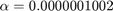

Exercise 1: Linear Regression
Submitted By: Prasannjeet Singh
Contents
Q1. Plotting the Data
The data can be plotted by simply using the scatter() function:
load Data/data_build_stories.mat; hFig = figure(1); scatter (data_build_stories(:,1), data_build_stories(:,2), 25, [0 0 0]); title('Scatter Plot of Building Features'); xlabel('Height of the Building in ft.'); ylabel('Number of Floors'); snapnow; close(hFig);

Q2. Computing by Normal Equation:
Implemented by the function normalEquation() which is present in this folder
Since we have only 1 feature in this example, our hypothesis will be:
The and values will be returned by the function normalEquation() in the form of a vector, the value of will be 900, as provided in the question and then we can use it to find out the estimated number of floors.
% First finding out the $beta$ vector: load Data/data_build_stories.mat; bNormal = ExTwoFunctions.normalEquation(data_build_stories(:,1), data_build_stories(:,2))
bNormal =
-3.3313
0.0800
Therefore, and
% Now calculating the number of floors % Rounding off, because number of floors cannot be a fraction height_building = 900; % Above value can be altered to find solution for different heights floors = round(bNormal(1) + height_building*bNormal(2))
floors =
69
Therefore, the estimated number of floors are 69
% Now plotting the sample data, the hypothesis and test solution clearvars plotM plotL; plotM(:,1) = min(data_build_stories(:,1)):1:max(data_build_stories(:,1)); plotM(:,2) = bNormal(1) + plotM(:,1)*bNormal(2); plotL(:,1) = min(data_build_stories(:,1)):1:height_building; plotL(:,2) = floors; hFig = figure(2); p = plot(plotM(:,1), plotM(:,2),'c'); p.LineWidth = 3; hold on; q = plot(plotL(:,1), plotL(:,2),'--'); q.LineWidth = 0.5; scatter (data_build_stories(:,1), data_build_stories(:,2), 25, [0 0 0]); scatter (height_building, floors, 75, [1 0 0], 'filled'); title('Scatter-Plot | Hypothesis Line | Test Solution'); xlabel('Height of the Building in ft.'); ylabel('Number of Floors'); snapnow; close(hFig);
Note that:
- Black Hollow Circles denote the training data provided.
- Bold Light Blue Line denotes the hypothesis, or the resultang solution generated by the normal equation.
- Big Red-Dot denotes the result when number of floors is 900, according to the normal equation solved above.
- Dotted blue horizontal line denotes the corresponding number of floors (which is 69 in our case when height of the building is 900 Feet
Q3. Implement the Cost Function
The cost function is implemented by the function mseSingleFeature() and is present in this folder.
To find the cost for the computed above, we can call the cost function like so:
% Clearing the used variables and then initializing them with data. clearvars y; features = data_build_stories(:,1); y = data_build_stories(:,2); % Calling the Cost Function. Note that *beta* was already calculated above. meanSquaredError = ExTwoFunctions.mseMultiFeature(features,y,bNormal)
meanSquaredError = 23.3015
Therefore, the Mean Squared Error derived by the cost function (for Normal Equation) is 23.3015.
Q4. Gradient Descent
The function used for both subquestions is gradientDescent(), and can be found in this folder.
(a) Without any feature normalization
The value of used for gradient descent in this case was a = 0.0000001002. Values any more than this (in the scale of ) resulted in an increasing cost function.
a = 0.0000001002;
Note that the following commands are commented as they take very long (~10 minutes) to come to a conclusion. However, I have performed them and printed the answers. Nevertheless, they can be uncommented to see the results live.
Applying gradient descent to find the and iterations (N): (Uncomment Below)
bWithoutNormalization(1) = -1.8237; bWithoutNormalization(2) = 0.0775; % [bWithoutNormalization, ~, N] = ExTwoFunctions.gradientDescent(features, y, a); % fprintf(strcat('The total number of iterations (N) were: ', int2str(N)));
Therefore using the above settings, it took the gradient descent algorithm a total of 1,286,391 iterations for the cost to come as near as of the cost generated by the normal equation. And the value of beta was: and
Calculating floors:
newFloors = round(bWithoutNormalization(1) + height_building*bWithoutNormalization(2))
newFloors =
68
Summarizing the answer:
- 
Further Works: I temporarily modified the gradientDescent() algorithm so that it runs until the change in cost value is less than . The algorithm ran for more than 30 minutes and following were the results:
The results were nearer to the normal results. Therefore, more we iterate the gradient descent, more does it go near the normal results.
(b) With feature normalization
The function normalizeData() normalizes the data, and can be found in this folder. In this case, we will use 0.000001 as the value of a, and then apply gradient descent.
normFeatures = ExTwoFunctions.normalizeData(features); a = 0.000001; [bNormalized, costArray, N] = ExTwoFunctions.gradientDescent(normFeatures, y, a); fprintf(strcat('The total iterations (N) were:',32, int2str(N), '\r\n')); fprintf(strcat('The value of beta is:',32, num2str(bNormalized(1)), 32,'and',32,num2str(bNormalized(2))));
The total iterations (N) were: 74983 The value of beta is: 39.9343 and 14.7211
To find out the predicted number of stories for a building of height 900 feet, first we'll have to convert 900 into it's normalized form, and then use the above generated and values to calculate the number of floors. Further, we will round off the values, as number of floors cannot be fractional.
normalizedHeight = (900-mean(features)) / std(features); newFloors = round(bNormalized(1) + normalizedHeight*bNormalized(2))
newFloors =
68
As we can see the answer matches to what we got with the gradient descent without feature normalization, however, it was much quicker and took drastically less iterations (74,983 vs 1,286,391) as compared to the former. We can even plot a graph to see the changes in mean squared error with each iterations:
hFig = figure(4); plot(costArray(:,1), costArray(:,2)); title('Changes in Cost Function with each Iteration:'); xlabel('Iterations (N)'); ylabel('Cost (J)'); snapnow; close(hFig);

Q5. Plotting the graph
We can plot three separate graphs for all the three cases. Note that all three values are stored in variables: bNormal, bWithoutNormalization and bNormalized, respectively, which will be used here:
xMax = max(features); xMin = min(features); xMaxNorm = max(normFeatures); xMinNorm = min(normFeatures); yNorm = ExTwoFunctions.normalizeData(y); hFig = figure(5); set(hFig, 'Position', [0 0 1500 500]); subplot(1,3,1); scatter (data_build_stories(:,1), data_build_stories(:,2), 25, [0 0 0]); hold on; f1 = @(x) bNormal(1) + bNormal(2)*x; fplot(f1,[xMin xMax],'r') title('Scatter plot and Hypothesis for Normal Solution'); xlabel('Height (in feet)'); ylabel('Number of floors'); subplot(1,3,2); scatter (data_build_stories(:,1), data_build_stories(:,2), 25, [0 0 0]); hold on; f2 = @(x) bWithoutNormalization(1) + bWithoutNormalization(2)*x; fplot(f2,[xMin xMax],'g') title('Solution for Gradient Descent without Normalization'); xlabel('Height (in feet)'); ylabel('Number of floors'); subplot(1,3,3); scatter (normFeatures, y, 25, [0 0 0]); hold on; f3 = @(x) bNormalized(1) + bNormalized(2)*x; fplot(f3,[xMinNorm xMaxNorm],'b') title('Solution for Gradient Descent with Normalization'); xlabel('Height (Normalized Data)'); ylabel('Number of floors'); snapnow; close(hFig);